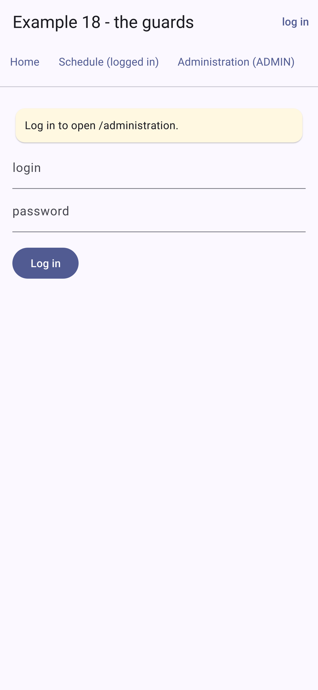
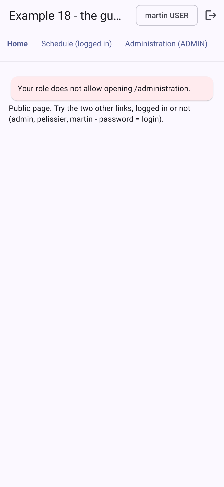
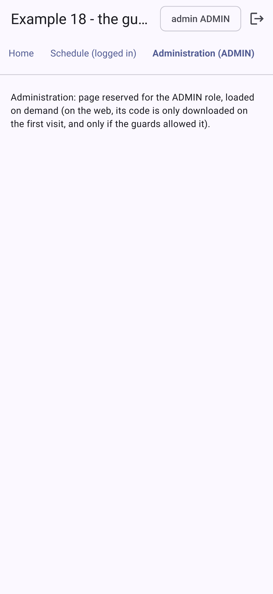

5. Enrutamiento
Una aplicación tiene varias pantallas. [Flutter] las gestiona mediante [Navigator]: una pila de pantallas, donde una nueva pantalla ([Navigator.push]) se apila y de la cual se desapila ([Navigator.pop], o el botón Atrás del teléfono). Esto es suficiente para una pequeña aplicación móvil. Pero en cuanto se desean URL (/doctors/2), es decir, pantallas a las que se pueda hacer referencia, abrir desde un enlace, recargar en la web y proteger con guardias, se utiliza un enrutador. El paquete [go_router], mantenido por el equipo de [Flutter] y recomendado en su documentación, es el más utilizado.
5.1. Ejemplo 17: el enrutador
5.1.1. Los datos
| // datos "fijos en el código", para no depender de un servidor en este ejemplo
typedef Doctor = ({int id, String title, String firstName, String lastName, String specialty});
const doctors = <Doctor>[
(id: 1, title: 'Mme', firstName: 'Marie', lastName: 'PELISSIER', specialty: 'general practitioner'),
(id: 2, title: 'Mr', firstName: 'Paul', lastName: 'TATOU', specialty: 'pediatrician'),
(id: 3, title: 'Melle', firstName: 'Sophie', lastName: 'DUPONT', specialty: 'general practitioner'),
];
|
Datos “escritos directamente en el código”, para no depender de un servidor en este ejemplo: una lista de records.
5.1.2. Las rutas
| // =========================================================================
// lib/ex17_router/routes.dart - las RUTAS de la aplicación
// -------------------------------------------------------------------------
// Una aplicación tiene varias pantallas ("páginas"). El ENRUTADOR asocia una
// DIRECCIÓN (una ruta, como en la web: /doctors/2) con una pantalla. Flutter
// proporciona el Navigator (una PILA de pantallas: apilamos, desapilamos); el
// paquete go_router, mantenido por el equipo de Flutter, le agrega las
// direcciones: enlaces, parámetros, el botón Atrás del navegador
// y direcciones escritas a mano en la web, el botón Atrás de Android.
// '/doctors/:id' :id es un parámetro (/doctors/2 -> id = "2");
// ShellRoute un "shell" común (barra superior, barra de
// navegación inferior) alrededor de las pantallas de sus rutas;
// redirect una redirección: la dirección antigua lleva a la nueva;
// errorBuilder la pantalla de una dirección que no coincide con ninguna ruta.
// =========================================================================
import 'package:go_router/go_router.dart';
import 'shell.dart';
import 'pages/home.dart';
// Carga DIFERIDA: en la web, el código de esta página solo se descarga
// en la primera visita (flutter build web genera un archivo aparte para ella)
import 'pages/about.dart' deferred as about;
import 'pages/deferred_loading.dart';
import 'pages/doctor_detail.dart';
import 'pages/doctor_list.dart';
import 'pages/not_found_page.dart';
import 'pages/search.dart';
final router = GoRouter(
// la dirección inicial (en un teléfono: no hay barra de direcciones)
initialLocation: '/',
routes: [
ShellRoute(
// child: la pantalla de la ruta hija actual, colocada DENTRO del shell
builder: (context, state, child) => Shell(child: child),
routes: [
GoRoute(path: '/', builder: (context, state) => const Home()),
GoRoute(
path: '/doctors',
builder: (context, state) => const DoctorList(),
// una ruta ANIDADA: /doctors/2
routes: [
GoRoute(
path: ':id',
// pathParameters: los parámetros de la ruta, siempre CADENAS
builder: (context, state) => DoctorDetail(id: state.pathParameters['id']!),
),
],
),
GoRoute(
path: '/search',
// uri.queryParameters: los parámetros después del ? (/search?q=pediatrician)
builder: (context, state) => Search(q: state.uri.queryParameters['q'] ?? ''),
),
GoRoute(
path: '/about',
builder: (context, state) =>
DeferredLoading(load: about.loadLibrary, builder: () => about.About()),
),
// una redirección: la ruta no tiene pantalla, devuelve otra dirección
GoRoute(path: '/physicians', redirect: (context, state) => '/doctors'),
],
),
],
errorBuilder: (context, state) => NotFoundPage(address: state.uri.toString()),
);
|
Una ruta asocia una ruta de acceso con una pantalla.
- Línea 23: una importación diferida ([deferred]). En la web, el código de esta página se compila en un archivo separado, que solo se descarga en la primera visita a la página ([about.loadLibrary()]). En un teléfono, todo el código ya está en la aplicación: [loadLibrary()] termina de inmediato;
- líneas 30–32: el enrutador, un objeto llamado [GoRouter], se crea una sola vez, fuera de cualquier widget. [initialLocation]: la dirección de inicio (en un teléfono no hay barra de direcciones que la muestre);
- líneas 34–36: una [ShellRoute] es un contenedor común para varias pantallas: la barra superior y la barra de navegación inferior. Su [builder] recibe [child] (la pantalla de la ruta actual) y la coloca dentro del contenedor. Es equivalente a las rutas anidadas y al [<Outlet />] de [React Router];
- línea 38: una ruta (su ruta de acceso) y una función que genera su pantalla. [state] ([GoRouterState]) describe la navegación actual: la dirección y sus parámetros;
- líneas 40–47: la lista de médicos y una ruta anidada: [':id'] bajo ['/doctors'] produce la ruta [/doctors/:id], donde [:id] es un parámetro ([/doctors/2]: [id] es igual a ["2"]). [state.pathParameters] proporciona los parámetros de ruta, que son siempre cadenas;
- líneas 52–54: [state.uri] es la dirección completa; [queryParameters] contiene los parámetros que siguen a [?] ([/search?q=pediatrician]);
- líneas 57–59: la página cargada bajo demanda por el widget [DeferredLoading] (que se explica más adelante);
- línea 62: una redirección: la ruta no tiene pantalla; su función [redirect] devuelve otra dirección, hacia la cual se redirige la navegación;
- línea 66: la pantalla para una dirección que no corresponde a ninguna ruta.
5.1.3. Inicio
| // =========================================================================
// lib/ex17_router/main.dart
// -------------------------------------------------------------------------
// MaterialApp.router: la aplicación ya no tiene UNA pantalla de inicio (home),
// el enrutador decide la pantalla, a partir de la dirección.
// usePathUrlStrategy(): en la web, direcciones "limpias" (/doctors/2)
// en lugar de la forma por defecto (/#/doctors/2). Sin efecto en otras plataformas.
// =========================================================================
import 'package:flutter/material.dart';
import 'package:flutter_web_plugins/url_strategy.dart';
import 'routes.dart';
void main() {
usePathUrlStrategy();
runApp(
MaterialApp.router(
debugShowCheckedModeBanner: false,
theme: ThemeData(colorSchemeSeed: Colors.indigo),
routerConfig: router,
),
);
}
|
- línea 16: en la web, direcciones “limpias” ([/doctors/2]) en lugar de la forma predeterminada ([/#/doctors/2]). No tiene efecto en un teléfono;
- líneas 17–21: [MaterialApp.router]: la aplicación ya no muestra UNA pantalla de inicio ([home]); el enrutador determina la pantalla según la dirección.
5.1.4. El shell de la aplicación
| // =========================================================================
// lib/ex17_router/shell.dart - el "shell" de la aplicación
// -------------------------------------------------------------------------
// La barra superior, la barra de navegación inferior y, entre las dos,
// la pantalla de la ruta actual (child).
// - GoRouterState.of(context).uri : la dirección actual;
// - context.go('/doctors') : ir a una dirección. La pila de
// pantallas se REEMPLAZA por la de esta dirección (una pestaña);
// - context.push('/doctors/2') : APILAR una pantalla sobre la
// pantalla actual; el botón Atrás (o context.pop()) la desapila.
// =========================================================================
import 'package:flutter/material.dart';
import 'package:go_router/go_router.dart';
// las pestañas: (ruta, etiqueta, ícono)
const tabs = [
('/', 'Home', Icons.home),
('/doctors', 'Doctors', Icons.people),
('/search?q=general practitioner', 'Search', Icons.search),
('/about', 'About', Icons.info),
];
class Shell extends StatelessWidget {
final Widget child;
const Shell({super.key, required this.child});
@override
Widget build(BuildContext context) {
final address = GoRouterState.of(context).uri;
// la pestaña activa: aquella cuya ruta es el comienzo de la dirección actual
int active = 0;
for (final (i, (path, _, _)) in tabs.indexed) {
final start = Uri.parse(path).path;
if (start != '/' && address.path.startsWith(start)) active = i;
}
return Scaffold(
appBar: AppBar(title: const Text('Example 17 - the router')),
body: Column(
crossAxisAlignment: CrossAxisAlignment.stretch,
children: [
Container(
color: Colors.grey.shade100,
padding: const EdgeInsets.all(8),
// Uri.decodeFull: %20 vuelve a convertirse en un espacio
child: Text(
'current address: ${Uri.decodeFull(address.toString())}',
style: const TextStyle(fontFamily: 'RobotoMono', fontSize: 12),
),
),
Expanded(
child: Padding(padding: const EdgeInsets.all(16), child: child),
),
],
),
// NavigationBar: la barra de pestañas inferior, típica de un celular
bottomNavigationBar: NavigationBar(
selectedIndex: active,
onDestinationSelected: (i) => context.go(tabs[i].$1),
destinations: [
for (final (_, label, icon) in tabs) NavigationDestination(icon: Icon(icon), label: label),
],
),
);
}
}
|
- Líneas 17–21: las pestañas: records (ruta de acceso, etiqueta, ícono);
- línea 31: la dirección actual. [GoRouterState.of(context)] es una lectura de datos heredados (véase el ejemplo 14): el shell se reconstruye con cada navegación;
- líneas 33–36: la pestaña activa: aquella cuya ruta de acceso es el comienzo de la dirección actual. [for (final (i, (path, _, _)) in tabs.indexed)] descompone tanto el par (posición, pestaña) como el record de la pestaña, conservando solo la ruta de acceso ([_]: “ignorado”);
- líneas 48–49: la dirección actual, mostrada ([Uri.decodeFull]: [%20] vuelve a ser un espacio);
- líneas 53–54: la pantalla de la ruta actual;
- líneas 59–63: la barra de pestañas inferior ([NavigationBar]), típica de una aplicación móvil. [onDestinationSelected] recibe el índice de la pestaña tocada; [context.go(path)] lleva a su dirección. [tabs[i].$1]: el primer campo de un record posicional.
Dos maneras de navegar, con [go_router]:
- [context.go('/doctors')]: ir a una dirección. La pila de pantallas es reemplazada por la que describe esta dirección. Esto es lo que se hace para cambiar de pestaña;
- [context.push('/doctors/2')]: apilar la pantalla de esta dirección encima de la pantalla actual. El botón Atrás del teléfono (o [context.pop()]) la desapila, y se regresa al punto de partida. Así se “entra” en una vista de detalle.
5.1.5. Las páginas
| // lib/ex17_router/pages/home.dart
// Title: el título de la pestaña del navegador (web) o de la aplicación en
// la lista de aplicaciones recientes (Android), mientras la página se muestre
import 'package:flutter/material.dart';
import 'package:go_router/go_router.dart';
class Home extends StatelessWidget {
const Home({super.key});
@override
Widget build(BuildContext context) {
return Title(
title: 'Home',
color: Colors.indigo,
child: ListView(
children: [
const Text(
'Welcome. Touch the tabs: the screen changes, and so does its address. On the web, '
"the address is displayed in the browser's bar, the Back and Forward buttons "
'work, as well as the reload (F5) of any page.',
),
const SizedBox(height: 16),
// enlaces a direcciones concretas
Wrap(
spacing: 8,
children: [
OutlinedButton(onPressed: () => context.go('/physicians'), child: const Text('/physicians (redirect)')),
OutlinedButton(onPressed: () => context.go('/unknown-page'), child: const Text('Broken link')),
],
),
],
),
);
}
}
|
Cada página coloca un widget [Title]: su título es el de la pestaña del navegador (en la web) o el de la aplicación en la lista de aplicaciones recientes (en [Android]), mientras la página se muestre. Dos botones llevan a URL específicas: la redirección [/physicians], y una URL que no existe.
| // lib/ex17_router/pages/doctor_list.dart - enlaces con un parámetro
import 'package:flutter/material.dart';
import 'package:go_router/go_router.dart';
import '../data.dart';
class DoctorList extends StatelessWidget {
const DoctorList({super.key});
@override
Widget build(BuildContext context) {
return Title(
title: 'Doctors',
color: Colors.indigo,
child: ListView(
children: [
for (final m in doctors)
ListTile(
title: Text('${m.title} ${m.firstName} ${m.lastName}'),
trailing: const Icon(Icons.chevron_right),
// push: la pantalla del médico se APILA; el botón Atrás vuelve aquí
onTap: () => context.push('/doctors/${m.id}'),
),
],
),
);
}
}
|
- Línea 22: al tocar un médico, su pantalla se apila.
| // =========================================================================
// lib/ex17_router/pages/doctor_detail.dart - una página con un parámetro
// -------------------------------------------------------------------------
// El enrutador le pasa el parámetro :id de la ruta, una CADENA ("2").
// context.pop() desapila la pantalla (como el botón Atrás); context.go()
// lleva a otra dirección. Si pasamos de /doctors/1 a /doctors/2,
// Flutter reutiliza la misma pantalla, simplemente reconstruida con otro id.
// =========================================================================
import 'package:flutter/material.dart';
import 'package:go_router/go_router.dart';
import '../data.dart';
class DoctorDetail extends StatelessWidget {
final String id;
const DoctorDetail({super.key, required this.id});
@override
Widget build(BuildContext context) {
// int.tryParse: null si id no es un número; firstWhere... orElse: no encontrado
final number = int.tryParse(id);
final found = doctors.where((m) => m.id == number);
if (found.isEmpty) {
return Text('Doctor no. $id does not exist.', style: const TextStyle(color: Colors.red));
}
final doctor = found.first;
final next = doctor.id % doctors.length + 1;
return Title(
title: '${doctor.firstName} ${doctor.lastName}',
color: Colors.indigo,
child: Column(
crossAxisAlignment: CrossAxisAlignment.start,
children: [
Text('${doctor.title} ${doctor.firstName} ${doctor.lastName}', style: Theme.of(context).textTheme.titleLarge),
Text('Specialty: ${doctor.specialty}'),
const SizedBox(height: 16),
Wrap(
spacing: 8,
children: [
OutlinedButton(
// canPop: ¿hay una pantalla debajo? (no, si llegamos
// directamente a esta dirección, en la web)
onPressed: () => context.canPop() ? context.pop() : context.go('/doctors'),
child: const Text('Back'),
),
FilledButton(
// pushReplacement: reemplaza la pantalla actual (sin apilar)
onPressed: () => context.pushReplacement('/doctors/$next'),
child: const Text('Next doctor'),
),
],
),
],
),
);
}
}
|
- línea 16: el parámetro de ruta [:id], que el enrutador pasa al constructor;
- líneas 23–26: [int.tryParse]: el identificador numérico, o [null]; si no se encuentra al médico, se muestra un mensaje;
- línea 45: Atrás: la pantalla se desapila si hay una debajo de ella ([canPop]); de lo contrario (si se llegó directamente a esta dirección en la web), se va a la lista;
- línea 50: el médico siguiente reemplaza a la pantalla actual (sin apilar: el botón Atrás regresa a la lista, no al médico anterior).
| // =========================================================================
// lib/ex17_router/pages/search.dart - una página dirigida por la dirección
// -------------------------------------------------------------------------
// /search?q=pediatrician: la página queda descrita por completo por su dirección.
// En la web, se puede guardar como marcador, recargar, se puede
// volver atrás. Buscar significa IR a la dirección /search?q=<input>:
// la página muestra lo que dice la dirección, y nada más.
// =========================================================================
import 'package:flutter/material.dart';
import 'package:go_router/go_router.dart';
import '../data.dart';
class Search extends StatelessWidget {
final String q;
const Search({super.key, required this.q});
void _search(BuildContext context, String input) {
// Uri: construye la dirección, codificando lo necesario (espacio -> %20)
context.go(Uri(path: '/search', queryParameters: {'q': input.trim()}).toString());
}
@override
Widget build(BuildContext context) {
final results = doctors
.where((m) => '${m.firstName} ${m.lastName} ${m.specialty}'.toLowerCase().contains(q.toLowerCase()))
.toList();
return Title(
title: 'Search',
color: Colors.indigo,
child: ListView(
children: [
// un campo NO controlado, que parte con el valor de la dirección;
// key: ValueKey(q): si la dirección cambia (botón Atrás), Flutter
// vuelve a crear el campo, que toma entonces el nuevo valor
TextFormField(
key: ValueKey(q),
initialValue: q,
decoration: const InputDecoration(hintText: 'name or specialty', suffixIcon: Icon(Icons.search)),
textInputAction: TextInputAction.search,
onFieldSubmitted: (input) => _search(context, input),
),
const SizedBox(height: 8),
for (final m in results) ListTile(title: Text('${m.firstName} ${m.lastName} (${m.specialty})')),
if (results.isEmpty)
const ListTile(
title: Text('No result.', style: TextStyle(color: Colors.grey)),
),
],
),
);
}
}
|
- Líneas 20–22: buscar significa IR a la dirección [/search?q=<input>]. [Uri] genera la dirección codificando la información necesaria (un espacio se convierte en [%20]). La página queda completamente descrita por su dirección: en la web, se puede guardar como marcador, recargar o retroceder;
- líneas 38–43: un campo sin validar que comienza con el valor de la URL. [key: ValueKey(q)]: si la URL cambia (botón Atrás del navegador), la clave cambia; [Flutter] recrea el campo, que adopta el nuevo valor. [textInputAction: TextInputAction.search]: la tecla Enter del teclado del teléfono actúa como una lupa.
| // =========================================================================
// lib/ex17_router/pages/deferred_loading.dart
// -------------------------------------------------------------------------
// Una pantalla cuyo código se carga bajo demanda (importación "deferred"):
// load() descarga el código (un Future), builder() construye la pantalla
// una vez que el código ha llegado. Mientras tanto: un indicador de carga.
// FutureBuilder reconstruye su contenido cuando el Future se completa
// (ver ejemplo 19).
// =========================================================================
import 'package:flutter/material.dart';
class DeferredLoading extends StatefulWidget {
final Future<void> Function() load;
final Widget Function() builder;
const DeferredLoading({super.key, required this.load, required this.builder});
@override
State<DeferredLoading> createState() => _DeferredLoadingState();
}
class _DeferredLoadingState extends State<DeferredLoading> {
// el Future se crea UNA SOLA VEZ (y no en cada build)
late final Future<void> _loading = widget.load();
@override
Widget build(BuildContext context) {
return FutureBuilder(
future: _loading,
builder: (context, snapshot) => snapshot.connectionState == ConnectionState.done
? widget.builder()
: const Center(child: CircularProgressIndicator()),
);
}
}
|
- línea 25: el código se carga e inicia UNA sola vez (un campo [late] inicializado en su primera lectura): si se iniciara en [build], cada reconstrucción lo volvería a desencadenar;
- líneas 29–33: [FutureBuilder] reconstruye su contenido cuando [Future] termina: mientras tanto, un indicador de carga; luego, la pantalla (véase el ejemplo 19).
| // lib/ex17_router/pages/about.dart - una página cargada bajo demanda
// (ver la importación "deferred as about" de routes.dart)
import 'package:flutter/material.dart';
class About extends StatelessWidget {
const About({super.key});
@override
Widget build(BuildContext context) {
return Title(
title: 'About',
color: Colors.indigo,
child: const Text(
'On the web, this page was downloaded on the first visit (Network tab '
'of the developer tools: a main.dart.js_1.part.js file). On a phone, '
'all the code is already in the application.',
),
);
}
}
|
| // lib/ex17_router/pages/not_found_page.dart - la pantalla de direcciones desconocidas
import 'package:flutter/material.dart';
import 'package:go_router/go_router.dart';
class NotFoundPage extends StatelessWidget {
final String address;
const NotFoundPage({super.key, required this.address});
@override
Widget build(BuildContext context) {
return Title(
title: 'Page not found',
color: Colors.indigo,
child: Scaffold(
appBar: AppBar(title: const Text('Page not found')),
body: Padding(
padding: const EdgeInsets.all(16),
child: Column(
crossAxisAlignment: CrossAxisAlignment.start,
children: [
Text('No page at the address $address.', style: const TextStyle(color: Colors.red)),
const SizedBox(height: 16),
FilledButton(onPressed: () => context.go('/'), child: const Text('Back to home')),
],
),
),
),
);
}
}
|
La pantalla de direcciones desconocidas tiene su propio [Scaffold]: la construye [errorBuilder], fuera del shell.
5.1.6. Ejecución
La pantalla de inicio; los detalles de un médico (apilados: la barra superior no ha cambiado, pero el botón Atrás del teléfono regresa a la lista); la búsqueda; una dirección desconocida:
En la web ([flutter run -d chrome]), la dirección aparece en la barra del navegador, los botones Atrás y Adelante funcionan, y se puede escribir una dirección manualmente.
5.2. Ejemplo 18: guardias de navegación
5.2.1. La sesión
| // =========================================================================
// lib/ex18_guards/session.dart - una sesión SIMULADA (sin servidor)
// -------------------------------------------------------------------------
// El usuario conectado debe ser conocido por las PANTALLAS (la barra superior,
// la agenda) y por los GUARDIAS del enrutador (funciones, que no son
// widgets). Se guarda en un único objeto, un ChangeNotifier:
// - un campo privado, el estado;
// - métodos para leerlo y modificarlo;
// - notifyListeners(): notifica a sus suscriptores (el enrutador, las pantallas)
// cuando cambia.
// (El ejemplo 23 hará lo mismo con un servidor real.)
// =========================================================================
import 'package:flutter/foundation.dart';
enum Role { admin, doctor, user }
typedef User = ({String login, Role role});
// tres cuentas "fijas en el código" (contraseña = login)
const _accounts = {'admin': Role.admin, 'pelissier': Role.doctor, 'martin': Role.user};
class Session extends ChangeNotifier {
User? _user; // el estado: null, nadie ha iniciado sesión
User? get user => _user;
bool logIn(String login, String password) {
final role = _accounts[login];
if (role == null || password != login) {
return false;
}
_user = (login: login, role: role);
notifyListeners();
return true;
}
void logOut() {
_user = null;
notifyListeners();
}
}
// la única sesión de la aplicación
final session = Session();
|
El usuario conectado debe ser reconocido por las pantallas (la barra superior, la agenda) y por los controles del enrutador, que no son widgets. Se almacena en un único objeto, un [ChangeNotifier] (véase el ejemplo 14):
- línea 24: el estado: un usuario, o [null];
- líneas 28–35: la conexión, simulada: tres cuentas “escritas directamente en el código” (contraseña = nombre de usuario). Notifica a sus suscriptores ([notifyListeners()]);
- línea 45: la única sesión de la aplicación, una variable global. (El ejemplo 23 hará lo mismo con un servidor real.)
5.2.2. Guardias y rutas protegidas
| // =========================================================================
// lib/ex18_guards/routes.dart - rutas PROTEGIDAS por guardias
// -------------------------------------------------------------------------
// redirect: una función a la que go_router llama ANTES de cada navegación
// (la del GoRouter: para todas las rutas; la de un GoRoute:
// solo para esa). Recibe el estado de la navegación (state.uri:
// la dirección solicitada) y devuelve:
// - null: la navegación continúa;
// - una dirección: la navegación se reemplaza por una navegación a
// esta dirección.
// refreshListenable: un objeto que se ESCUCHA; cuando notifica un
// cambio (la sesión: inicio o cierre de sesión), el enrutador vuelve a evaluar
// sus guardias para la pantalla actual.
//
// Es el equivalente del lado del cliente de los guardias de NestJS (JwtAuthGuard,
// RolesGuard), con una diferencia FUNDAMENTAL: un guardia del cliente es
// solo una comodidad. La aplicación está en manos del usuario, que
// puede modificarla a voluntad. La protección real de los datos sigue siendo
// la del SERVIDOR (ver el capítulo sobre la caja negra).
// =========================================================================
import 'package:go_router/go_router.dart';
import 'shell.dart';
import 'pages/home.dart';
import 'pages/administration.dart' deferred as administration;
import 'pages/schedule.dart';
import 'pages/login.dart';
import '../ex17_router/pages/deferred_loading.dart';
import 'session.dart';
// el guardia "inicio de sesión requerido": si no ha iniciado sesión -> a la página de inicio de sesión,
// recordando adónde quería ir el usuario
String? requireLogin(GoRouterState state) {
if (session.user == null) {
return Uri(path: '/login', queryParameters: {'redirect': state.uri.toString()}).toString();
}
return null;
}
// el guardia "rol requerido": una función que CONSTRUYE un guardia
String? Function(GoRouterState) requireRole(Set<Role> roles) {
return (state) {
final u = session.user;
if (u == null || !roles.contains(u.role)) {
// con sesión iniciada, pero sin el rol adecuado: de vuelta al inicio, con un motivo
return Uri(path: '/', queryParameters: {'denied': state.uri.path}).toString();
}
return null;
};
}
final router = GoRouter(
refreshListenable: session,
routes: [
ShellRoute(
builder: (context, state, child) => Shell(child: child),
routes: [
GoRoute(
path: '/',
builder: (context, state) => Home(denied: state.uri.queryParameters['denied']),
),
GoRoute(
path: '/login',
builder: (context, state) => Login(redirectTo: state.uri.queryParameters['redirect']),
),
GoRoute(
path: '/schedule',
redirect: (context, state) => requireLogin(state),
builder: (context, state) => const Schedule(),
),
GoRoute(
path: '/administration',
// los guardias, en orden: gana el primero que devuelve una dirección
redirect: (context, state) => requireLogin(state) ?? requireRole({Role.admin})(state),
// el código de la página solo se carga una vez superados los guardias
builder: (context, state) =>
DeferredLoading(load: administration.loadLibrary, builder: () => administration.Administration()),
),
],
),
],
// cualquier otra dirección (ninguna ruta coincide): de vuelta al inicio
onException: (context, state, router) => router.go('/'),
);
|
Con [go_router], un guardia es una función redirect, llamada antes de cada navegación (la de [GoRouter]: para todas las rutas; la de [GoRoute]: solo para esa ruta). Recibe el estado de la navegación y devuelve:
- [null]: la navegación continúa;
- una dirección: la navegación se reemplaza por una navegación a esa dirección.
El código:
- líneas 34–38: el guardia de “conexión requerida”: ¿no hay sesión iniciada? Redirige a la página de inicio de sesión, conservando el destino previsto (parámetro [redirect]);
- líneas 42–47: el guardia de “rol requerido” es generado por una función que recibe los roles permitidos y devuelve el guardia. Con sesión iniciada, pero sin el rol correcto: redirige a la página de inicio, con un motivo (parámetro [denied]);
- línea 54: el enrutador supervisa la sesión: cuando detecta un cambio (inicio o cierre de sesión), reevalúa los guardias de la pantalla actual. Si usted cierra la sesión desde la agenda, se lo redirige de inmediato a la página de inicio de sesión;
- línea 69: la agenda requiere que el usuario haya iniciado sesión;
- línea 75: la página de administración requiere que el usuario haya iniciado sesión Y tenga el rol (ADMIN): las verificaciones se encadenan con [??]; la primera que devuelve una dirección tiene prioridad;
- Líneas 77–78: el código de la página de administración se carga solo después de superar los guardias;
- línea 84: cualquier otra dirección redirige a la página de inicio.
Este es el equivalente, en el cliente, de las verificaciones del servidor [NestJS] ([JwtAuthGuard], [RolesGuard]), con una fundamental diferencia: un guardia del lado del cliente es solo una comodidad (para evitar mostrar una pantalla innecesaria). La aplicación está en manos del usuario, que puede modificarla a su antojo; la verdadera protección de los datos sigue estando en el servidor, que lo reverifica todo en cada solicitud (véase el capítulo sobre la caja negra).
5.2.3. El shell y las páginas
| // =========================================================================
// lib/ex18_guards/shell.dart - los enlaces y el usuario conectado
// -------------------------------------------------------------------------
// ListenableBuilder: reconstruye su contenido cada vez que el objeto
// escuchado (la sesión) notifica un cambio. Por tanto, la barra superior
// sigue al usuario conectado.
// =========================================================================
import 'package:flutter/material.dart';
import 'package:go_router/go_router.dart';
import 'session.dart';
class Shell extends StatelessWidget {
final Widget child;
const Shell({super.key, required this.child});
@override
Widget build(BuildContext context) {
final path = GoRouterState.of(context).uri.path;
// un enlace: en negrita si designa la página mostrada
Widget link(String target, String label) => TextButton(
onPressed: () => context.go(target),
child: Text(label, style: TextStyle(fontWeight: path == target ? FontWeight.bold : FontWeight.normal)),
);
return Scaffold(
appBar: AppBar(
title: const Text('Example 18 - the guards'),
actions: [
ListenableBuilder(
listenable: session,
builder: (context, _) {
final u = session.user;
if (u == null) {
return TextButton(onPressed: () => context.go('/login'), child: const Text('log in'));
}
return Row(
children: [
Chip(label: Text('${u.login} ${u.role.name.toUpperCase()}')),
IconButton(
tooltip: 'log out',
icon: const Icon(Icons.logout),
onPressed: () {
session.logOut();
context.go('/');
},
),
],
);
},
),
],
),
body: Column(
crossAxisAlignment: CrossAxisAlignment.start,
children: [
Wrap(
children: [
link('/', 'Home'),
link('/schedule', 'Schedule (logged in)'),
link('/administration', 'Administration (ADMIN)'),
],
),
const Divider(),
Expanded(
child: Padding(padding: const EdgeInsets.all(16), child: child),
),
],
),
);
}
}
|
- líneas 24–26: una función local que crea un enlace: en negrita si se refiere a la página que se muestra actualmente;
- líneas 33–37: [ListenableBuilder] reconstruye su contenido cada vez que el objeto supervisado (la sesión) señala un cambio: la barra superior sigue al usuario conectado;
- líneas 46–48: cierre de sesión y luego la página de bienvenida.
| // =========================================================================
// lib/ex18_guards/pages/login.dart
// -------------------------------------------------------------------------
// Tras iniciar sesión, el usuario es enviado de vuelta a la página que quería
// abrir (parámetro ?redirect=... establecido por el guardia), o al inicio.
// =========================================================================
import 'package:flutter/material.dart';
import 'package:go_router/go_router.dart';
import '../session.dart';
class Login extends StatefulWidget {
final String? redirectTo;
const Login({super.key, this.redirectTo});
@override
State<Login> createState() => _LoginState();
}
class _LoginState extends State<Login> {
final _login = TextEditingController();
final _password = TextEditingController();
bool _error = false;
@override
void dispose() {
_login.dispose();
_password.dispose();
super.dispose();
}
void _submit() {
if (!session.logIn(_login.text.trim(), _password.text)) {
setState(() => _error = true);
return;
}
// solo se acepta una ruta INTERNA: empieza con /, pero no con //
// (//site.com/... designa OTRO sitio) - sin redirección a otro sitio
final r = widget.redirectTo;
final internal = r != null && r.startsWith('/') && !r.startsWith('//');
context.go(internal ? r : '/');
}
@override
Widget build(BuildContext context) {
return ListView(
children: [
if (widget.redirectTo != null)
Card(
color: Colors.amber.shade50,
child: Padding(
padding: const EdgeInsets.all(12),
child: Text('Log in to open ${widget.redirectTo}.'),
),
),
TextField(
controller: _login,
decoration: const InputDecoration(labelText: 'login'),
),
TextField(
controller: _password,
obscureText: true,
decoration: const InputDecoration(labelText: 'password'),
onSubmitted: (_) => _submit(),
),
const SizedBox(height: 16),
Align(
alignment: Alignment.centerLeft,
child: FilledButton(onPressed: _submit, child: const Text('Log in')),
),
if (_error)
const Padding(
padding: EdgeInsets.only(top: 8),
child: Text('Incorrect login or password.', style: TextStyle(color: Colors.red)),
),
],
);
}
}
|
- líneas 41–43: después de iniciar sesión, se redirige al usuario a la página que quería abrir (parámetro [redirect] definido por el guardia), o a la página de inicio. Solo se acepta una ruta interna: comienza con [/], pero no con [//] ([//site.com/...] se refiere a OTRO sitio). En la web, una URL de inicio de sesión generada por un tercero ([/login?redirect=//pirate-site.com]) nunca llevará, por lo tanto, a ningún otro lugar.
Las demás páginas son muy sencillas:
| import 'package:flutter/material.dart';
class Home extends StatelessWidget {
// ?denied=...: lo establece el guardia requireRole cuando el rol no corresponde
final String? denied;
const Home({super.key, this.denied});
@override
Widget build(BuildContext context) {
return ListView(
children: [
if (denied != null)
Card(
color: Colors.red.shade50,
child: Padding(padding: const EdgeInsets.all(12), child: Text('Your role does not allow opening $denied.')),
),
const Text(
'Public page. Try the two other links, logged in or not '
'(admin, pelissier, martin - password = login).',
),
],
);
}
}
|
| import 'package:flutter/material.dart';
import '../session.dart';
class Schedule extends StatelessWidget {
const Schedule({super.key});
@override
Widget build(BuildContext context) {
return Text.rich(
TextSpan(
children: [
const TextSpan(text: 'The schedule of '),
TextSpan(
text: session.user?.login,
style: const TextStyle(fontWeight: FontWeight.bold),
),
const TextSpan(text: ': this page requires being logged in.'),
],
),
);
}
}
|
| import 'package:flutter/material.dart';
class Administration extends StatelessWidget {
const Administration({super.key});
@override
Widget build(BuildContext context) {
return const Text(
'Administration: page reserved for the ADMIN role, loaded on demand (on the web, its '
'code is only downloaded on the first visit, and only if the guards allowed it).',
);
}
}
|
| // =========================================================================
// lib/ex18_guards/main.dart
// =========================================================================
import 'package:flutter/material.dart';
import 'package:flutter_web_plugins/url_strategy.dart';
import 'routes.dart';
void main() {
usePathUrlStrategy();
runApp(
MaterialApp.router(
debugShowCheckedModeBanner: false,
theme: ThemeData(colorSchemeSeed: Colors.indigo),
routerConfig: router,
),
);
}
|
5.2.4. Ejecución
Sin haber iniciado sesión, solicitamos acceso a la interfaz de administración: el guardia nos redirige a la página de inicio de sesión (a la izquierda). Iniciamos sesión con la cuenta [martin] (rol USER): el inicio de sesión nos lleva de vuelta a la interfaz de administración, donde el segundo guardia niega el acceso (en el centro). Tras iniciar sesión con la cuenta [admin], la página se abre (a la derecha):
 |  |  |